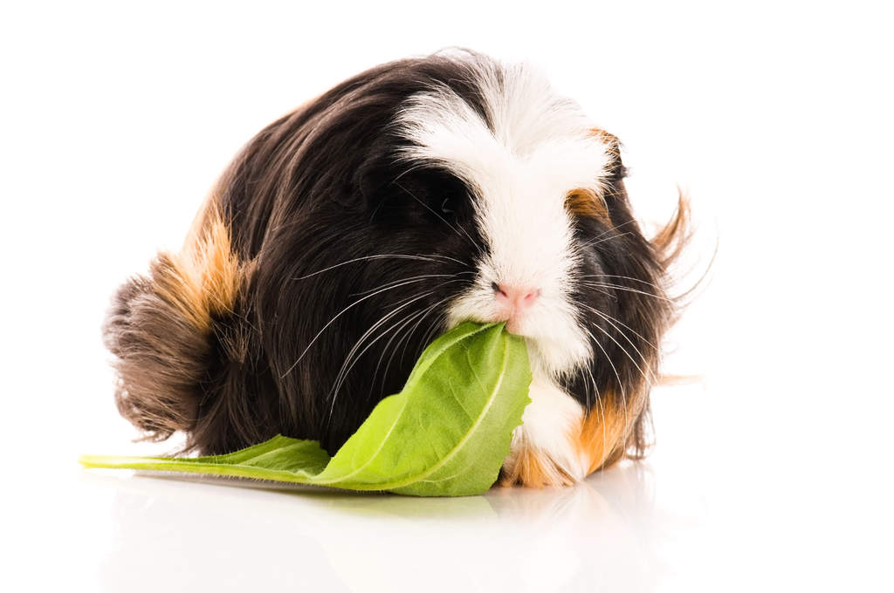
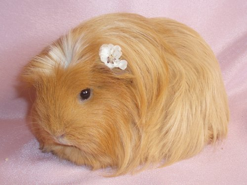
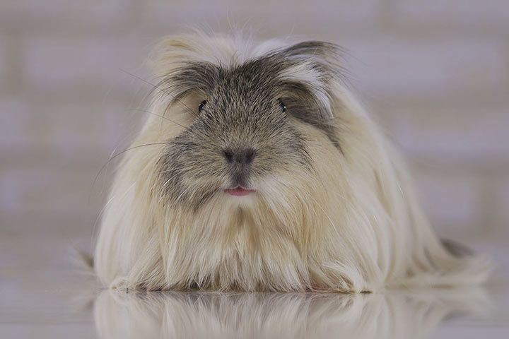
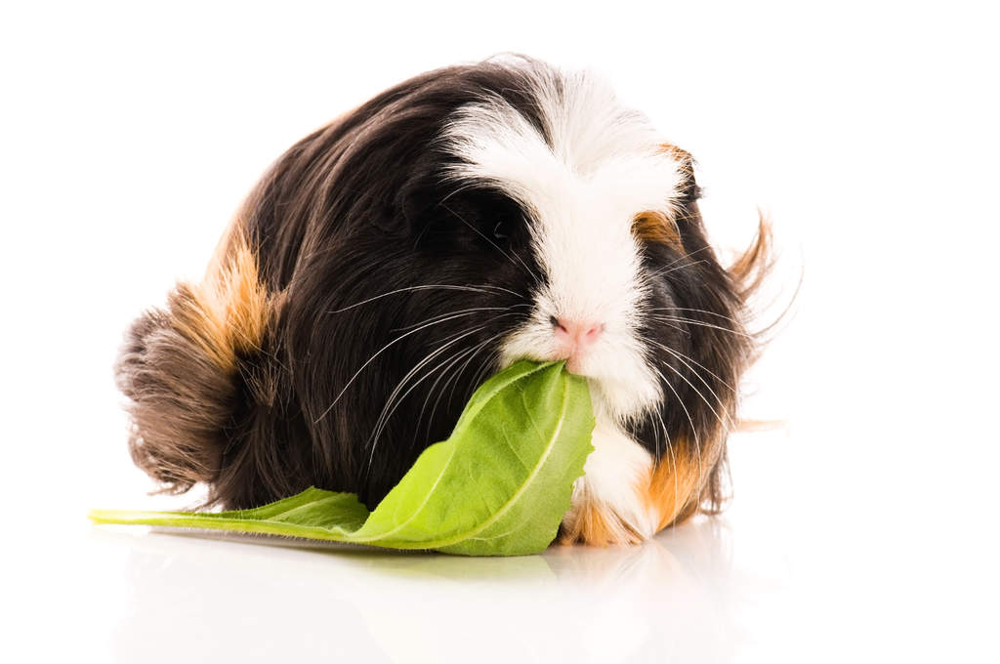
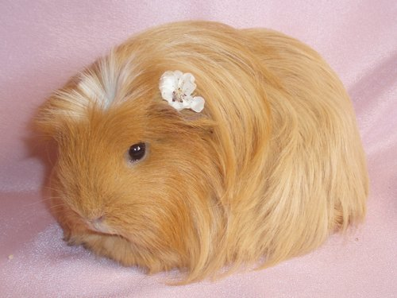
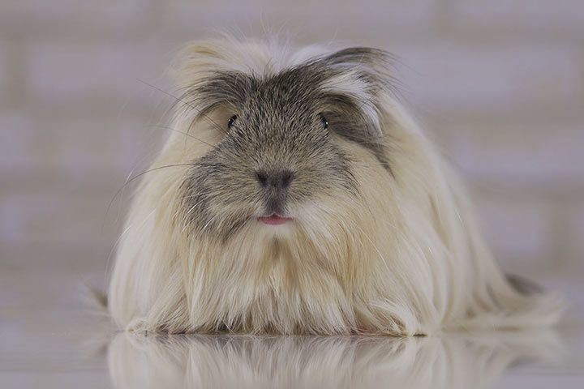
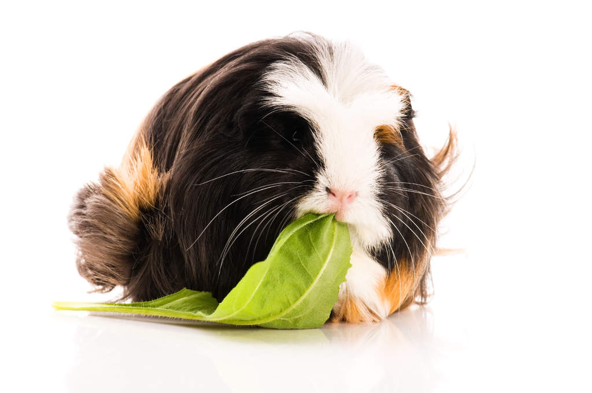
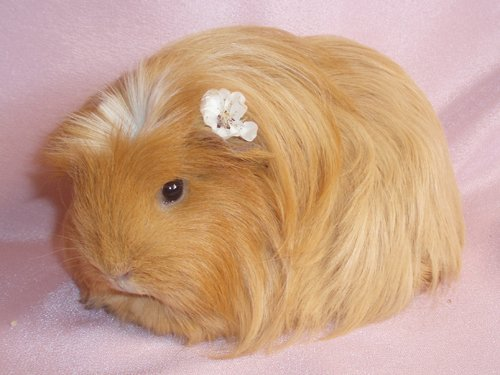
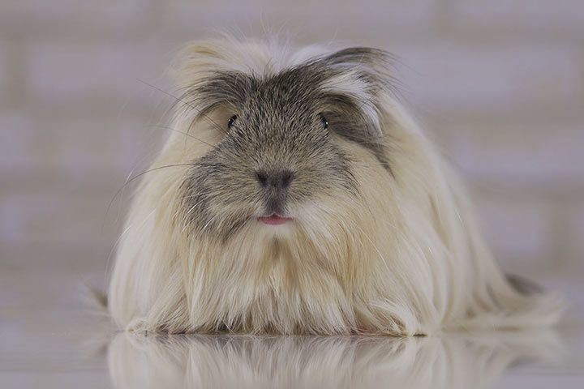

Коронет - це довгошерста порода морських свинок, схожа на породу шелті. Тим не менш, основна відмінність між шелті та коронетами полягає в тому, що в останніх на маківці є розетка-гребінь у вигляді корони, звідси і назва породи. Свинки породи коронет приваблюють своєю граціозністю та суворим поглядом з-під густих брів. Шерсть лягає з обох боків довгим шлейфом, розділеним на рівний проділ, нагадує королівську мантію. А корона на голові доповнює королівський образ. Розетка на голові розподіляє зростання вовни на голові та за вухами. Гребені коронетов можуть бути будь-яких кольорів. Та й забарвлення цих свинок теж може бути будь-якого відтінку та кольору: стандарти допускають будь-які варіації, як одноколірні, так і з поєднанням декількох кольорів. Крім того, можуть бути сатинові коронеты, з більш блискучою, гладкою і щільною шубкою, яка переливається на світлі і схожа на атлас.
Коронет - це одна з новітніх порід морських свинок, яка ще не отримала широкого розповсюдження, тому купити свинку-коронета зараз можна тільки у заводчиків, які займаються розведенням цієї породи. Порода коронет, через свою довгошерстність, не є ідеальною для початківців свинководів або для дітей. Головна гордість коронета — його шерсть — зажадає додаткового щоденного догляду.


